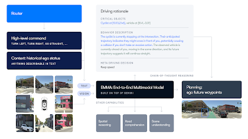
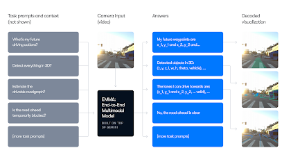

EMMAの紹介：自律走行向けEnd-to-Endマルチモーダルモデルに関するWaymoの研究
公開日： 2024年10月30日 著者： Waymoチーム

Waymoは15年以上にわたり、自律走行におけるAIおよびMLの最前線に立ち続け、この分野の研究発展に継続的に貢献しています。本日は、自律走行向けEnd-to-Endマルチモーダルモデル（EMMA）に関する最新の研究論文を公開します。
GoogleのマルチモーダルLLMであるGeminiを基盤とするEMMAは、統合されたEnd-to-Endトレーニングモデルを採用し、センサーデータから直接、自律走行車両の将来の軌道を生成します。自律走行向けに特化してトレーニング・ファインチューニングされたEMMAは、Geminiが持つ広範な世界知識を活用することで、道路上の複雑なシナリオをより深く理解します。
本研究では、Geminiのようなマルチモーダルモデルをどのように自律走行に適用できるか、そして純粋なEnd-to-Endアプローチの長所と短所を探っています。また、良好な空間理解と推論能力を必要とする自律走行タスク向けにモデルをファインチューニングした場合においても、マルチモーダルな世界知識を組み込むことの利点を明らかにしています。特筆すべき点として、EMMACはいくつかの重要な自律走行タスク間でポジティブなタスク転移を示しています：プランナー軌道予測、物体検出、道路グラフ理解を共同でトレーニングすることで、各タスクを個別にトレーニングした場合と比較してパフォーマンスが向上します。これは将来の研究において有望な方向性を示しており、さらに多くのコアな自律走行タスクを同様の、より大規模なセットアップで組み合わせることができる可能性を示しています。
「EMMACは、マルチモーダルモデルの力と自律走行への関連性を実証する研究です」と、Waymoの研究担当VPであるDrago Anguelovは述べています。「マルチモーダルな手法が走行スタックをどのように強化できるかを探求し続けることに興奮しています。」
EMMAの紹介
EMMACは、大規模マルチモーダル学習モデルと技術をより多くのドメインへ統合しようとするAI研究界の広範な取り組みを反映しています。Geminiを基盤とし、その能力を活用して、モーションプランニングや3D物体検出などの自律走行タスクに特化したモデルを作成しました。
本研究の主要な特徴は次の通りです：
End-to-End学習： EMMACは生のカメラ入力とテキストデータを処理し、プランナー軌道、知覚オブジェクト、道路グラフ要素を含む様々な走行出力を生成します。
統一言語空間： EMMACはセンサー以外の入力と出力を自然言語テキストとして表現することで、Geminiの世界知識を最大限に活用します。
Chain-of-Thought推論： EMMACはChain-of-Thought推論を用いて意思決定プロセスを強化し、End-to-Endプランニング性能を6.7%向上させるとともに、走行判断に解釈可能な根拠を提供します。

EMMACの複数タスクへの共同トレーニング
EMMACは、End-to-Endプランニング軌道予測、カメラ優先3D物体検出、道路グラフ推定、シーン理解を含む複数の自律走行タスクで、公開・社内ベンチマークにおいて最先端または競争力のある結果を達成しています。
EMMACの最も有望な側面のひとつは、共同トレーニングによる改善能力です。単一の共同トレーニングされたEMMACが複数タスクの出力を同時に生成しながら、個別にトレーニングされたモデルのパフォーマンスに匹敵またはそれを上回ることができ、多くの自律走行アプリケーションにおける汎用モデルとしての可能性を際立たせています。

EMMACは大きな可能性を示していますが、いくつかの課題があることも認識しています。現在のEMMACの長期動画シーケンス処理の制限により、リアルタイムの走行シナリオについての推論能力が制限されています——長期記憶は、複雑に進化する状況をEMMACが予測・対応できるようにするために不可欠です。安全な走行挙動を確保するためのその他の主要な課題としては、EMMACがLiDARとレーダーの入力を活用していないこと（より精巧な3Dセンシングエンコーダーの融合が必要）、評価のための効率的なシミュレーション手法の課題、モデル推論時間の最適化の必要性、そして中間的な意思決定ステップの検証などが挙げられます。
WaymoにおけるAIの未来
スタンドアロンモデルとしてのEMMACの上記の課題にもかかわらず、この研究は、マルチモーダル技術でAVシステムのパフォーマンスと汎化能力を高めることの利点を強調しています。
この研究の意義は自律走行車を超えるものがあります。最先端のAI技術を実世界のタスクに適用することで、複雑かつ動的な環境におけるAIの能力を拡張しています。この進歩は、予測不可能な状況において複数の入力に基づく迅速かつ情報に基づいた意思決定が必要とされる他の重要な分野でのAI活用につながる可能性があります。マルチモーダル大規模言語モデルの自律走行への応用を探求しながら、私たちは交通安全とアクセシビリティの向上に取り組み続けます。この研究は、AIが将来的に複雑な実世界の環境をより効果的にナビゲートし推論するための刺激的な道を開きます。
AIにおける最も興味深く影響力のある課題の解決に情熱を持っている方は、ぜひ私たちとのキャリア機会を探り、交通の未来を共に形作っていただければ幸いです。この研究の技術的詳細に深く踏み込みたい方は、こちらから完全な論文をご覧いただけます。